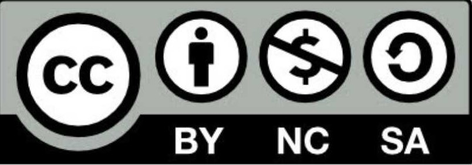

Texto
Autor/a: Ana María Pareja Pérez
Descripción: Proyecto sobre educación vial, diseñado para alumnado con necesidades educativas especiales.
Enlace al recurso: [Enlace al recurso en Procomún, Graasp o Drive.to]
Recursos utilizados:
- Imágenes: https://arasaac.org/pictograms/search
- Vídeos: https://www.youtube.com/
Aplicaciones digitales:
- Canva: https://www.canva.com/design/DAGjqvimfN0/cW-JZ04q75gNtaJ5LA9A9w/edit en la creación de documentos, infografía y mapa mental.
- Genialmente: https://app.genially.com/teams/69e654a2fdc458526f54a37e/spaces/69e654a2fdc458526f54a3a0/templates/home?for-me=highligted-templates para la elaboración de actividades.
- Padlet: https://padlet.com/anaarenas95/educacion-vial-1w8pm3x5eyw2ksrv para recopilar recursos para el proyecto.
- Symbaloo : https://www.symbaloo.com/shared/AAAAAdOAIp8AA41-5EVJJQ== para gestionar recursos del día a día en el aula.
Licencia: 
Descargar el archivo fuente
| Título | Aprendiendo Seguridad Vial |
|---|---|
| Descripción | Este proyecto se centra en la educación vial como herramienta fundamental para potenciar la seguridad personal y la autonomía de niños y niñas con necesidades educativas especiales. A lo largo de cuatro semanas, se llevarán a cabo sesiones de una hora dos veces a la semana, donde se abordarán conceptos básicos sobre circulación peatonal, señales de tráfico y seguridad en el automóvil. |
| Autoría | |
| Licencia | Creative Commons BY-SA 4.0 |
Este contenido fue creado con eXeLearning, el editor libre y de fuente abierta diseñado para crear recursos educativos.